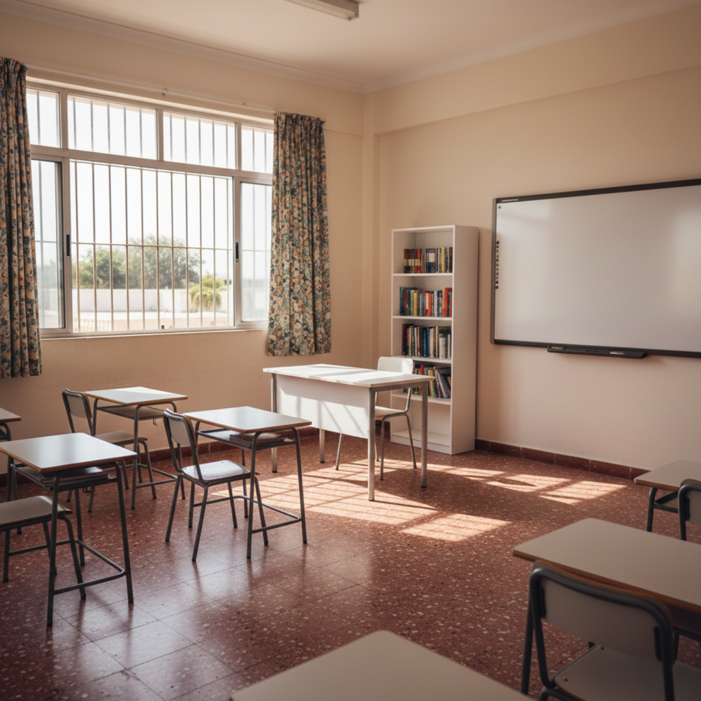
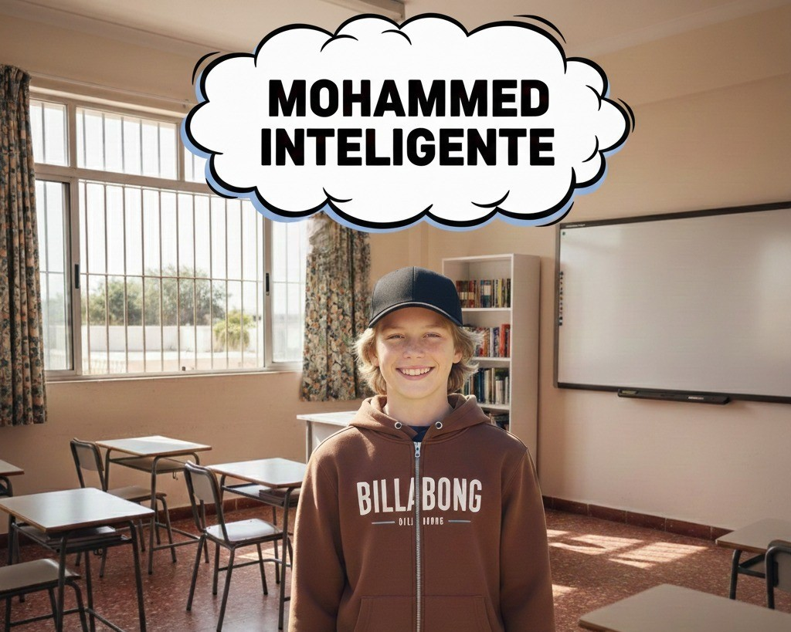

El encuentro
Creo que ninguno olvidará el día que nos conocimos, desde el primer momento que hablamos ambos supimos que no sería algo casual, el destino nos juntó y nosotros respetamos su decisión siguiendo juntos.

Nuestro primer beso
El primer beso, ese que tanto deseaba que me dieses tú, pero que al final acabe teniendo que dártelo yo, que cabezota eres eh? Pero te di un buen primer beso, en un lugar que hicimos especial solo con un beso, un recuerdo que jamás olvidaré.

Fin de clase
Como olvidar aquel día eh, un día lleno de risas, bromas, y momentos especiales. Horas de conversación por WhatsApp, incluso, un interrogatorio sobre mí 😂.